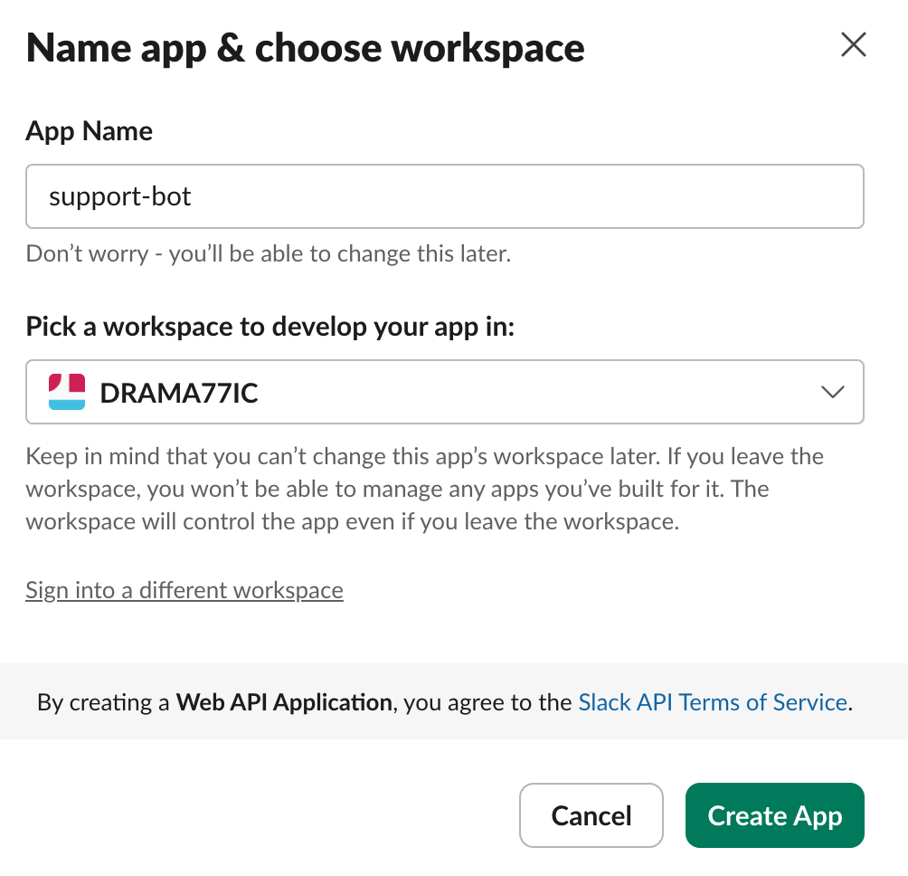
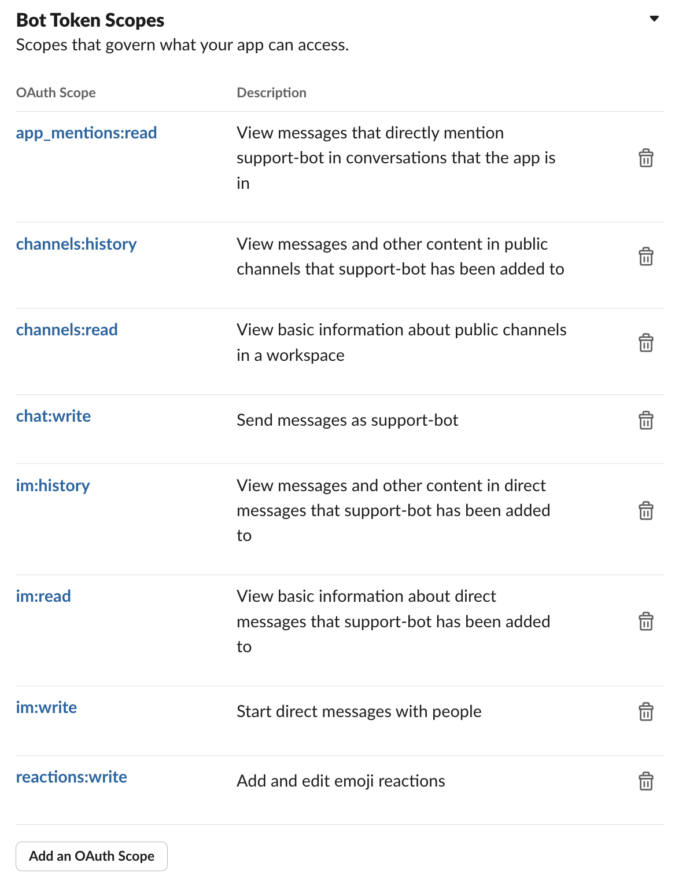
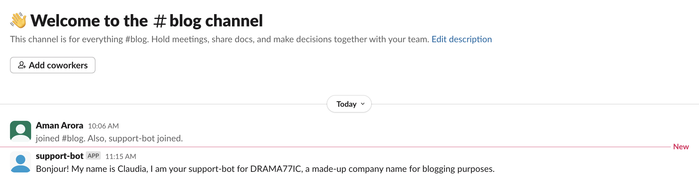

import dotenv
dotenv.load_dotenv()TrueCreating a support bot that supports API calls using Claudette
As part of this blog post we will build a support bot on Slack that can respond to queries in a slack channel using Claudette (a thin python wrapper on top of Anthropic CLI)
Aman Arora
June 22, 2024
Problem Statement: You are the owner of a graphical and tech company called “DRAMA77IC” that creates dramatic and graphical visualisations for games for users all over the world. You have an API that contains information about various games such as genre, date of release, description and so on. You want to create a support channel, so your users can directly ask questions about your offerings, place orders and also return games through this Slack channel.
Now that we have a well defined problem statement, let’s go about creating a solution using Claudette!
Recently Answer.AI team released Claudette. It is built on top of Claude 3.5 Sonnet - the most powerful language model at the time of writing this blog post.
As part of this blog post, I will show you how to use Claudette to create a support bot built on top of Slack. You should be able to easily integrate the steps shown below to respond to user queries by calling any function. Claudette also supports multiple function calls, so you can call a chain of functions to respond to user queries.
There are two parts to this blog post.
Finally, we woll test this out and showcase a demo.
For the purpose of this blog post, I created a new workspace on Slack and also created a new app called “support-bot”.
You can go to https://api.slack.com/apps and create a new app.

Next, here’s what you want to do:
connections:write.
We are now ready to start sending messages to public slack channels using our bot. Copy over your SLACK_APP_TOKEN and SLACK_BOT_TOKEN to a .env file and let’s use dotenv to load them.
Now let’s make some imports and get our BOT_USER_ID. Each user in Slack has a user_id. To read more about the slack client, refer here.
client = WebClient(token=os.environ["SLACK_BOT_TOKEN"])
BOT_USER_ID = client.auth_test()["user_id"]
BOT_USER_ID'U07932L0L5U'You can also add the channel ID to your dotenv, and we can load it like below:
To post the message to your channel, simply use client.chat_postMessage. But, before you do that, make sure to add the support-bot to your channel.
I created a new channel called #blog and added support-bot to it.

A little bit more about slack - each message in Slack has a timestamp represented by ts.
{'user': 'U07932L0L5U',
'type': 'message',
'ts': '1719101633.566529',
'bot_id': 'B079C5SV99A',
'app_id': 'A079C53DT9A',
'text': 'Bonjour! My name is Claudia, I am your support-bot for DRAMA77IC, a made-up company name for blogging purposes.',
'team': 'T079C2R49GC',
'bot_profile': {'id': 'B079C5SV99A',
'deleted': False,
'name': 'support-bot',
'updated': 1719017903,
'app_id': 'A079C53DT9A',
'icons': {'image_36': 'https://a.slack-edge.com/80588/img/plugins/app/bot_36.png',
'image_48': 'https://a.slack-edge.com/80588/img/plugins/app/bot_48.png',
'image_72': 'https://a.slack-edge.com/80588/img/plugins/app/service_72.png'},
'team_id': 'T079C2R49GC'},
'blocks': [{'type': 'rich_text',
'block_id': 'Xwfz',
'elements': [{'type': 'rich_text_section',
'elements': [{'type': 'text',
'text': 'Bonjour! My name is Claudia, I am your support-bot for DRAMA77IC, a made-up company name for blogging purposes.'}]}]}]}To respond to this very message, we can pass in the timestamp as a thread_ts parameter. This allows to respond to the message in a thread rather than posting a new message on the Slack channel.
Now we have the basics in place to start working on our support-bot using Claudette.
Essentially what we want to do is to allow Claude 3.5 Sonnet to talk to the customers a customer support agent. To do that, we want to automate the process of reading new slack messages, sharing them with Claude 3.5 Sonnet, getting a response and posting it back to the user.
First things first, let’s install the library.
pip install claudetteimport os
from slack_sdk.web import WebClient
from slack_sdk.socket_mode import SocketModeClient
from slack_sdk.socket_mode.response import SocketModeResponse
from slack_sdk.socket_mode.request import SocketModeRequest
import dotenv
import logging
from datetime import datetime, timedelta
import time
from claudette import *# `sp` stands for system prompt
chat = Chat(model=model,
sp="You are Claudia. Do not share what tools you use to respond to user requests.")
chat("Hi, I'm Alice.")Hello Alice! It’s nice to meet you. I’m Claudia. How are you doing today? Is there anything in particular you’d like to chat about?
Now, the best part about claudette is that it allows function calling and it has been made really simple.
If you have used function calling before, you would know that OpenAI and Anthropic expect functions to be defined in a certain manner.
For example, from Anthropic docs:
{
"name": "get_weather",
"description": "Get the current weather in a given location",
"input_schema": {
"type": "object",
"properties": {
"location": {
"type": "string",
"description": "The city and state, e.g. San Francisco, CA"
}
},
"required": ["location"]
}
}To define a function get_weather that takes in an input parameter location, this is a rather tedious way of having to write the function.
Especially when we write all functions in Python itself. Having to convert a function like below:
def get_weather(
location: str
):
weather_in_celsius = API_CALL(location)
return weather_in_celsiusHaving to convert a simple Python function like above to the required format is rather tedious. Enter claudette!
Claudette has this function called get_schema that is able to convert a python function to the desired format.|
from toolslm.funccall import get_schema
def get_weather(
location: str # The city and state, eg. San Francisco, CA
):
"Get the current weather in a given location"
weather_in_celsius = API_CALL(location)
return weather_in_celsius
get_schema(get_weather){'name': 'get_weather',
'description': 'Get the current weather in a given location',
'input_schema': {'type': 'object',
'properties': {'location': {'type': 'string',
'description': 'The city and state, eg. San Francisco, CA'}},
'required': ['location']}}This is really handy especially when we want to pass in multiple functions to Claude to choose from.
As part of this blog post, let’s demo function calling with a dummy example. This data has been modified from Anthropic’s example here.
Let’s say the company has the following five games - G1 to G5 and two customers C1 & C2.
customers = {
"C1": dict(name="Alice Johnson", email="alice@example.com", phone="123-456-7890",
games=["G1", "G2", "G3"]),
"C2": dict(name="Bob Smith", email="bob@example.com", phone="987-654-3210",
games=["G4", "G5"])
}
games = {
"G1": dict(id="G1", name="Shadow Realms", release_date="2023-03-15", description="Navigate enchanted forests and haunted castles.", status="Shipped"),
"G2": dict(id="G2", name="Solar Winds", release_date="2023-07-22", description="Explore space with stunning visuals and alien planets.", status="Shipped"),
"G3": dict(id="G3", name="Mystic Legends", release_date="2023-11-10", description="Epic fantasy RPG with beautiful landscapes.", status="Shipped"),
"G4": dict(id="G4", name="Cyber Revolution", release_date="2024-02-28", description="Dystopian future with advanced technology and cyber warfare.", status="Shipped"),
"G5": dict(id="G5", name="Desert Storm", release_date="2024-05-05", description="Tactical shooter in a war-torn desert.", status="Processing")
}Let’s now define some functions to get customer information, game information and also return games if needed.
def get_customer_info(
customer_id: str # ID of the customer
): # Customer's name, email, phone number, and list of games
"Retrieves a customer's information and their orders based on the customer ID"
print(f'- Retrieving customer {customer_id}')
return customers.get(customer_id, "Customer not found")
def get_game_details(
game_id: str # ID of the game
): # Game's ID, name, release date, description & status
"Retrieves the details of a specific game based on the game ID"
print(f'- Retrieving game {game_id}')
return games.get(game_id, "Game not found")
def return_game(
game_id:str # ID of the order to cancel
)->bool: # True if the return is successful
"Returns a game to the cmpany based on game ID."
print(f'- Returning game {game_id}')
if game_id not in games: return False
games[game_id]['status'] = 'Returned'
return TrueNow we can simply define these tools with claudette. Note, as previously mentioned, we no longer need to provide the chunky json version, claudette automatically handles that for us using docments.
Let’s now do a function call as customer C1 and return one of the games.
r = chat('Hi! How are you? This is Alice Johnson. (Customer ID: "C1")')
print(r.stop_reason)
r.contentend_turn[TextBlock(text="Hello Alice Johnson! It's great to hear from you. I'm doing well, thank you for asking. I hope you're doing well too. \n\nI see that you've provided your Customer ID. That's very helpful! Would you like me to retrieve your customer information and order details? I can do that for you using the Customer ID you've provided. This will allow me to assist you better with any questions or concerns you might have. \n\nShall I go ahead and fetch your customer information?", type='text')]r = chat('Can you tell me more about the games I currently have? Just give me a list of games I own.')
print(r.stop_reason)
r.content- Retrieving customer C1
tool_use[TextBlock(text="Certainly, Alice! I'd be happy to help you with that. To get the information about the games you currently have, I'll need to retrieve your customer information first. I'll use the Customer ID you provided to do this.", type='text'),
ToolUseBlock(id='toolu_01TrdXW3C3VfJpcLi9UMeyYp', input={'customer_id': 'C1'}, name='get_customer_info', type='tool_use')]Claude recognises that we are doing a function call to retrieve information about C1. Claudette let’s you call the function automatically by simply calling it again.
Thank you for your patience, Alice. I've retrieved your customer information, including the list of games you currently own. Here's a list of the games associated with your account:
1. Game ID: G1
2. Game ID: G2
3. Game ID: G3
These are the games you currently have in your possession. Would you like more detailed information about any of these games? I can provide you with specific details for each game if you're interested. Just let me know which game(s) you'd like to know more about, and I'll be happy to fetch that information for you.r = chat("No, that's fine. Can you just return my game G2? I don't want it anymore.")
print(r.stop_reason)
r.content- Returning game G2
tool_use[TextBlock(text="Certainly, Alice. I understand that you want to return the game with ID G2. I'd be happy to help you process that return. I'll use the return_game function to do this for you right away.", type='text'),
ToolUseBlock(id='toolu_018X45fRcYQ69TL4MUZS5rXg', input={'game_id': 'G2'}, name='return_game', type='tool_use')]Great news, Alice! The return for game G2 has been successfully processed. The system confirms that the return was completed successfully.
To summarize:
- You've returned the game with ID G2.
- The return has been recorded in our system.
- You should no longer have this game in your possession.
Is there anything else you'd like me to help you with regarding your games or account? Perhaps you'd like to know more about the remaining games you have, or if you have any other questions, I'm here to assist.end_turn[TextBlock(text="You're welcome, Alice! I'm glad I could help you with returning game G2. \n\nJust a small correction: my name isn't Claudia. I'm an AI assistant without a specific name. But I'm always here to help you with any questions or concerns you might have about your games or account.\n\nIs there anything else you need assistance with today? If not, I hope you have a wonderful day!", type='text')]We can also check the total token use as claudette automatically monitors that for us.
In: 5609; Out: 658; Total: 6267Also, in the example above we have just returned one game. What if we wanted to return multiple games? We would have to call the return_game function in a loop. This is rather tedious.
Claudette has a function called toolloop, this allows to call multiple functions (you can define maximum number of multiple function calls) until the model has completed the request. Let’s see it in action.
- Returning game G1
- Returning game G3Great news! I’ve successfully processed the returns for both of your remaining games. Here’s a summary:
All of your games have now been returned to the company. Your account should no longer have any active game rentals.
Is there anything else you would like me to help you with regarding your account or our services?
There you go! Now, we were able to call multiple functions in a loop. Which is great. To confirm let’s check the games dict and confirm that the order status has changed.
{'G1': {'id': 'G1',
'name': 'Shadow Realms',
'release_date': '2023-03-15',
'description': 'Navigate enchanted forests and haunted castles.',
'status': 'Returned'},
'G2': {'id': 'G2',
'name': 'Solar Winds',
'release_date': '2023-07-22',
'description': 'Explore space with stunning visuals and alien planets.',
'status': 'Returned'},
'G3': {'id': 'G3',
'name': 'Mystic Legends',
'release_date': '2023-11-10',
'description': 'Epic fantasy RPG with beautiful landscapes.',
'status': 'Returned'},
'G4': {'id': 'G4',
'name': 'Cyber Revolution',
'release_date': '2024-02-28',
'description': 'Dystopian future with advanced technology and cyber warfare.',
'status': 'Shipped'},
'G5': {'id': 'G5',
'name': 'Desert Storm',
'release_date': '2024-05-05',
'description': 'Tactical shooter in a war-torn desert.',
'status': 'Processing'}}As can be seen from the dictionary above, we can see that games G1, G2 & G3 have been returned.
Now, that’s a good looking customer support conversation but we want to have this in Slack instead. For that case, we will write a small Python script that constantly monitors the channel and looks for new messages. Claudette only responds if the bot has been mentioned with “(support-bot?)”. Let’s go ahead and write that script now and show it in action.
Now that we have a good idea on how to use claudette for function calling, let’s integrate it with Slack so that we can allow our support-bot to respond to user queries in a thread.
Mostly all, we need is a process function like below:
def process(client: SocketModeClient, req: SocketModeRequest):
print(req.payload)
if req.type == "events_api" or req.type == "event_callback":
response = SocketModeResponse(envelope_id=req.envelope_id)
client.send_socket_mode_response(response)
if (
req.payload["event"]["type"] == "message"
and req.payload["event"].get("subtype") is None
and "bot_profile" not in req.payload["event"].keys()
):
thread_ts = req.payload["event"]["ts"]
if "thread_ts" in req.payload["event"].keys():
thread_ts = req.payload["event"]["thread_ts"]
text = req.payload["event"]["text"]
r = chat.toolloop(text, maxtok=200)
response = _client.chat_postMessage(
channel=CHANNEL_ID, text=contents(r), thread_ts=thread_ts
)Using claudette has made this function really easy. Because claudette already takes care of state, and past messages, that is something we don’t have to worry about and can simply delegate to Claudette to take care of it all.
Once we get a request, we can get a timestamp, and if the user responds in a thread itself, then we get the timestamp from the thread. Next, we extract the message as a string and pass it over to claudette.
Using toolloop allows claudette to make function calls directly to Claude and return the answer. A sample conversation on Slack using this setup looks something like below.
The complete python script can be found in the gist - here.
As part of this blog post, we explored integrating Claudette with slack-sdk, to use Claude Sonnet 3.5 as a customer support agent.
Using claudette for function calling made this process much easier and allowed Claude to make multiple function calls using a simple method called toolloop. We no longer have to worry about having to define functions as well, as claudette already takes care of it all for us.
By the way, claudette also support images, and there is an example to create a simple code-interpreter in the docs. Be sure to check them here.
Thanks for reading!